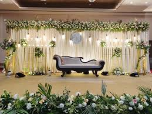
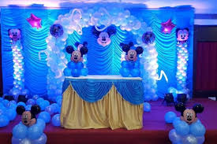

Rejoicing Events
In a world where memories are made and moments are cherished, Rejoicing Events stands out as a premier event management company, dedicated to crafting exceptional experiences that leave a lasting impact. With a passion for celebration and a keen eye for detail, our team of experts is poised to take your events to new heights.
Our Story
Rejoicing Events was born out of a desire to bring people together, to create moments that transcend time, and to make memories that last a lifetime. Our founders, driven by a shared passion for event planning, set out to create a company that would revolutionize the way events are perceived and executed. With years of experience in the industry, we assembled a team of like-minded individuals, each bringing their unique expertise and creative flair to the table.
Our Mission
At Rejoicing Events, our mission is simple yet profound: to deliver events that exceed our clients' expectations, to create experiences that touch hearts, and to build relationships that last. We believe that every event is a celebration of life's precious moments, and we're committed to making each one unforgettable.
Our Values
Creativity: We believe that every event should be a reflection of our clients' unique style and vision. Our team of experts will work closely with you to bring your ideas to life.
Attention to Detail: We understand that it's the little things that make a big difference. Our meticulous attention to detail ensures that every aspect of your event is flawless.
Excellence: We strive for perfection in every event we manage. Our team is dedicated to delivering exceptional service, ensuring your event is a resounding success.
Collaboration: We believe that partnerships are key to success. Our team will work closely with you to ensure seamless execution.
Innovation: We stay ahead of the curve, embracing the latest trends and technologies to ensure your event is always ahead of the times.
Our Services
Social Events: Birthday parties, anniversaries, and galas – our team will bring your vision to life.
Corporate Events: Product launches, conferences, and team-building exercises – we'll help you create events that inspire and motivate.
Wedding Planning: From intimate gatherings to grand affairs, our team will guide you through every step of the planning process.
Event Design: Our experts will create bespoke event designs that reflect your unique style and vision.
Logistics and Coordination: We'll handle every detail, from venue selection to vendor management.
 Our Process
At Rejoicing Events, we understand that every event is unique. That's why we've developed a tailored approach to event management:
1.Initial Consultation: We'll meet with you to discuss your vision, goals, and expectations.
2.Event Conceptualization: Our team will develop a customized event concept, incorporating your ideas and preferences.